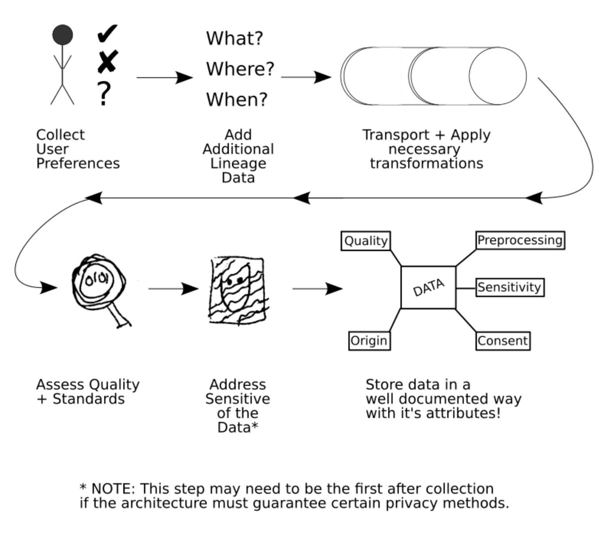
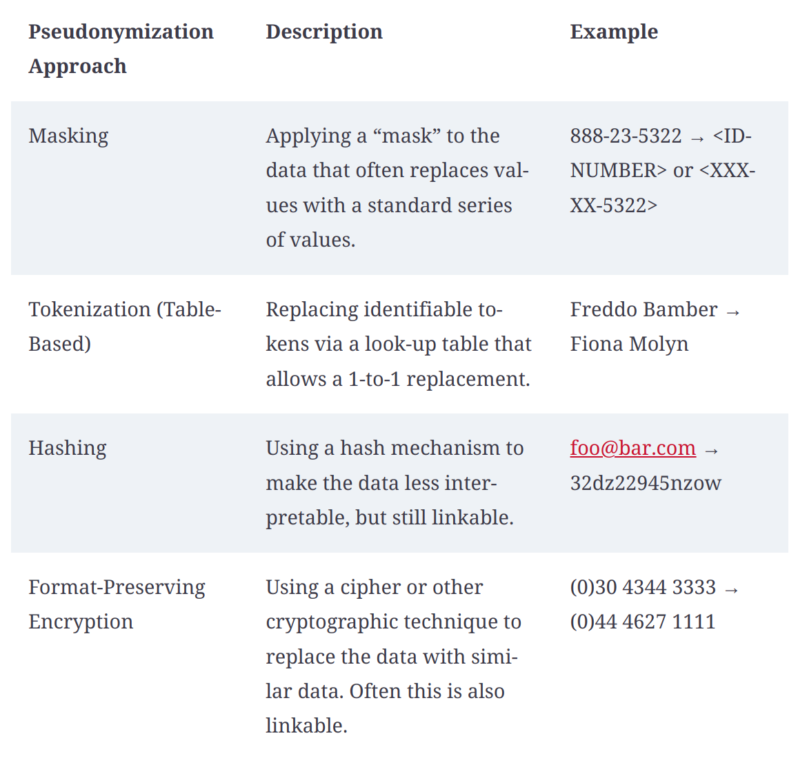
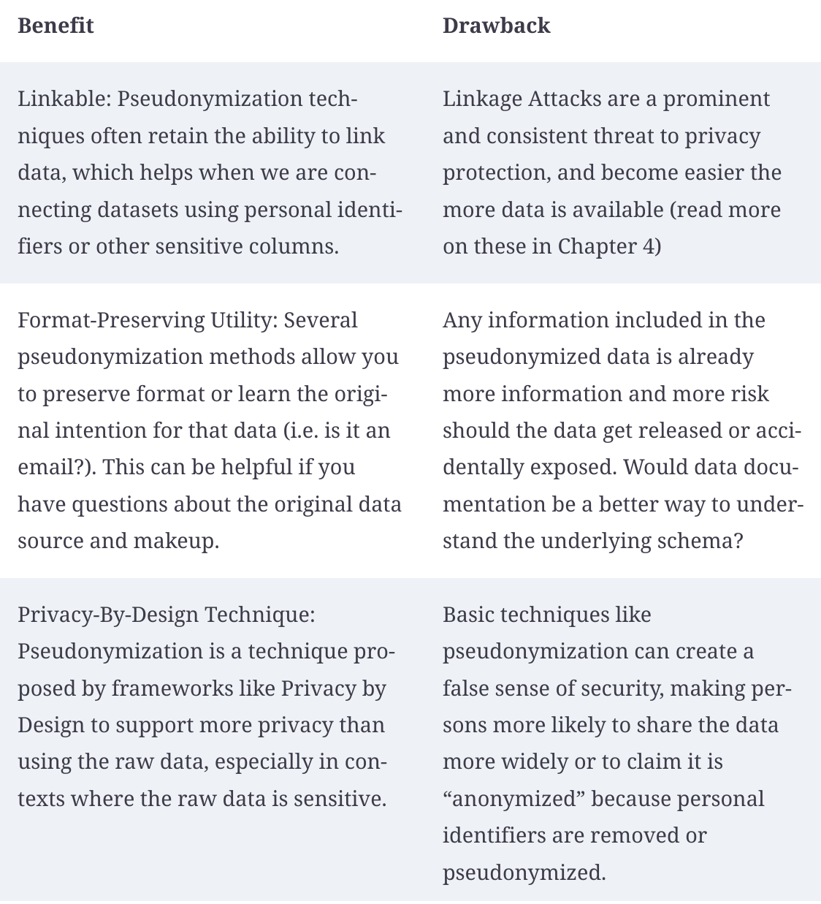

Approaches to Data privacy
Identifying sensitive data
- Data which could be used separately or in combination with other information to identify a person or small group of persons
- Personally Identifiable Information (PII)
- Person-Related data
- Proprietary and Confidential data
Open source library to Identify PII Information
Documenting data for use
- We can have a classification system for the data.
- Use classification as an initial step for documentation
- Toolkit for documenting Data - Data Cards
- Framework for documenting Models - Model Cards
- Tool for Data Management
- Documenting data Collection
- Documenting Data Quality
- Documenting Data Security
- Documenting Data Privacy
- Documenting Data Descriptions
- Documenting Data Statistics
- Documenting consent
- Track Data Lineage
- Data version control

Pseudonymization
- It is a technique that allows us to use “Pseudonyms” instead of real names and data

- Linking is a primary attack vector to determine the identity of an individual.

If the data will be only used intenally by a small group of individuals who may require privileged access, then pseudonymization might be a good fit for the needs
Tools for pseudonymization